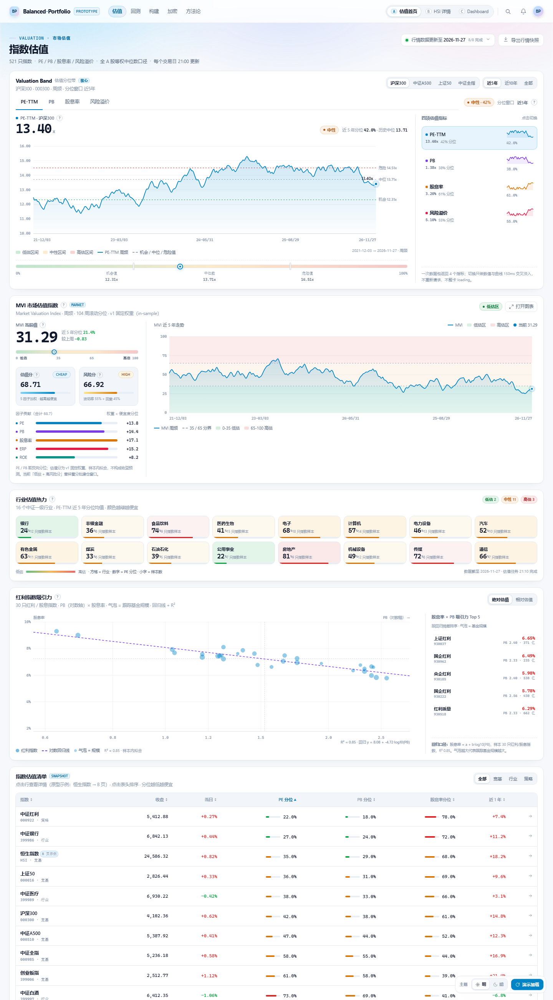
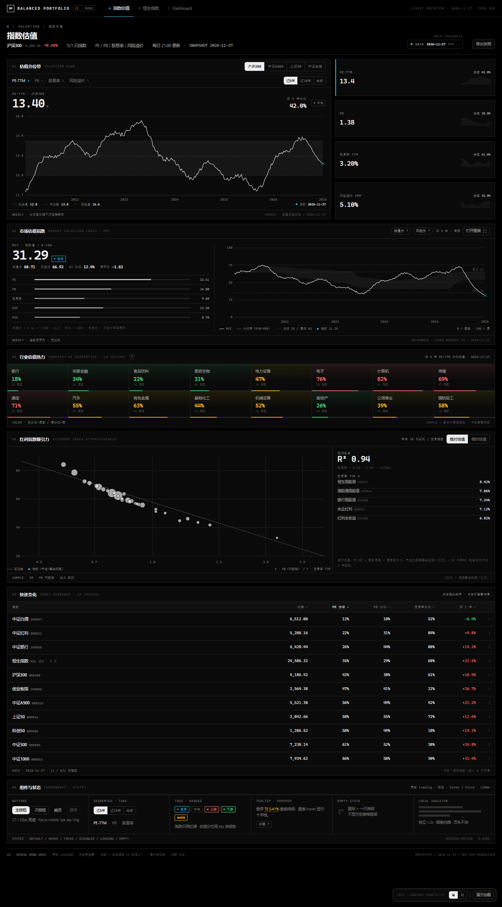

三个视觉方向、同一套内容与交互。点开每个变体可切换 A 估值首页 / B HSI 详情 / C Dashboard，右上角可切明暗、右下角可演示“局部 loading”。选定后按 docs/design/2026-11-27-unified-redesign/implementation-plan.md 开工。


/valuation 的信息密度与图表质感、/valuation/HSI 的跟踪基金呈现、/dashboard 的模式切换与局部 loading；
2) 可直接回复「选 V1/V2/V3」或「V1 的结构 + V2 的图表风格」等混合；
3) 选择后我会把选定变体落到真实的 Next.js 组件与 token，并按 implementation-plan 的 P0→P3 并行实施。